ΕΚΘΕΣΗ: ΤΡΙΚΟΥΠΕΙΟ ΠΟΛΙΤΙΣΤΙΚΟ ΚΕΝΤΡΟ (ΔΗΜΟΣ Ι.Π. ΜΕΣΟΛΟΓΓΙΟΥ)
Έως Σάββατο 26 Ιουνίου 2021
ΘΕΜΑ: "Ελπίδα και αγώνας και οι Ελληνίδες στα άρματα"
Στα εγκαίνια της εκδήλωσης που τελέστηκε στο Τρικούπειο Πολιτιστικό Κέντρο και εντάσσεται στο πολιτιστικό πρόγραμμα του Δήμου Ι.Π. Μεσολογγίου για τα 200 χρόνια από την Ελληνική Επανάσταση πέραν του Δημάρχου Κώστα Λύρου και μελών της Δημοτικής αρχής, έδωσαν το παρών οι Δήμαρχοι Ναυπάκτου Βασίλης Γκίζας και Θέρμου Σπύρος Κωνσταντάρας, ο Αντιδήμαρχος Έργων Ηλιούπολης Κώστας Σεφτελής, περιφερειακοί σύμβουλοι, εκπρόσωποι συλλόγων και φορέων και πλήθος κόσμου.

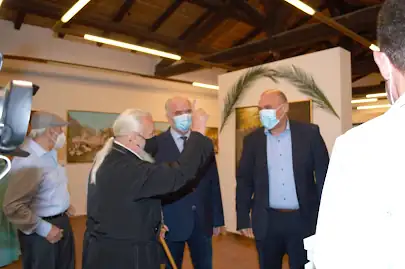
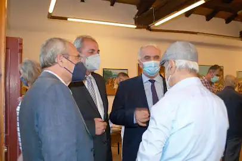
Μετά την κοπή της κορδέλας των εγκαινίων οι παραβρισκόμενοι ξεναγήθηκαν στο χώρο και είδαν τα έργα του λαϊκού ζωγράφου. Είκοσι επτά έργα τέχνης με θέματα από την ελληνική επανάσταση εκτίθενται μέχρι το Σάββατο 26 Ιουνίου με ελεύθερη είσοδο.
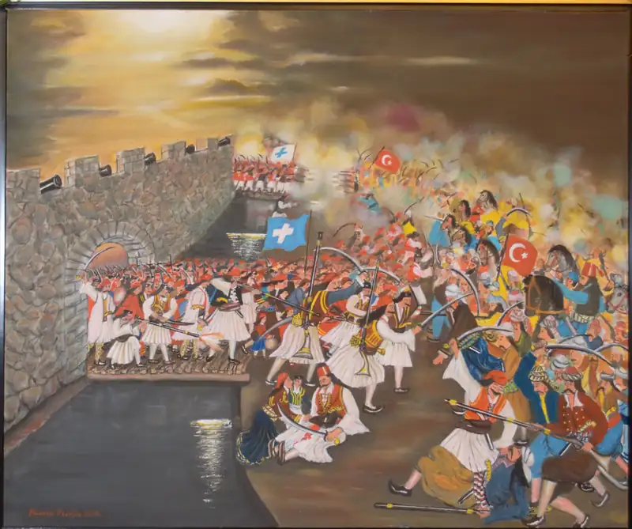
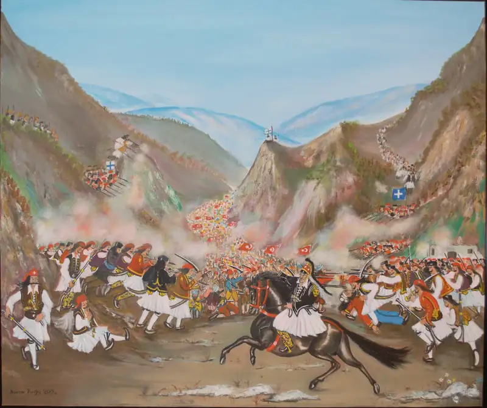
Στο σύντομο χαιρετισμό του ο Κώστας Λύρος τόνισε ότι «ο Δήμος μας φιλοξενεί το πνευματικό έργο ενός δημιουργού της τέχνης, που προσέφερε και συνεχίζει να προσφέρει πολλά στο πολιτισμικό γίγνεσθαι της χώρας μας. Συνεχίζει με συνέπεια, καθαρότητα κι ένταση συναισθημάτων, την εικαστική του παρέμβαση, κατακτώντας διακρίσεις παγκόσμιες, επιβραβεύσεις και αναγνώριση του αυθεντικού προσωπικού έργου του».
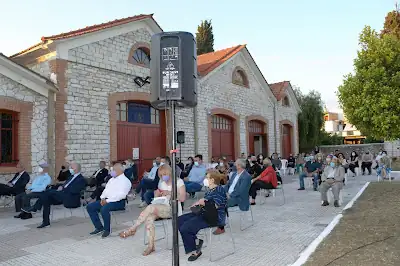
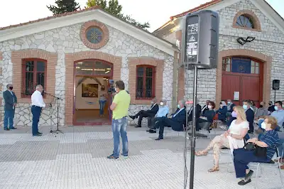
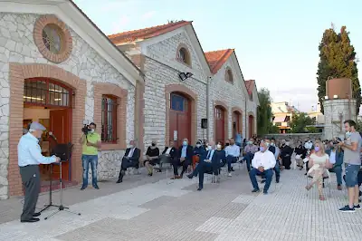
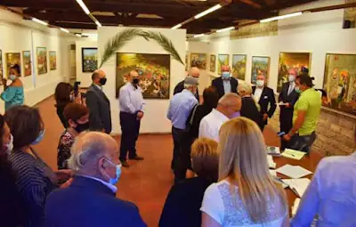
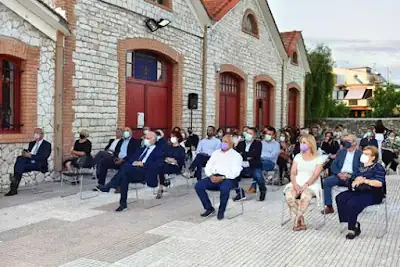
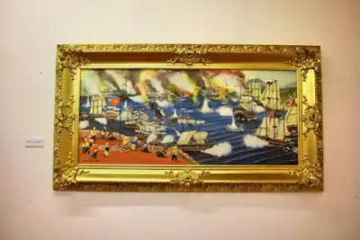
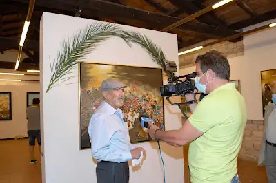
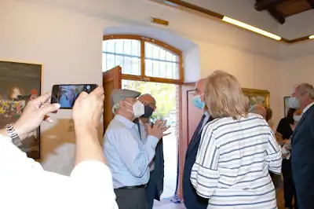
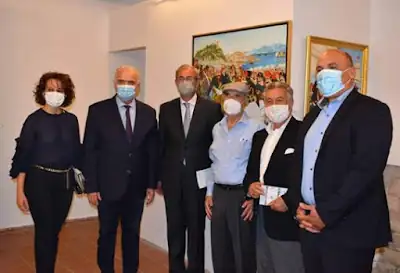